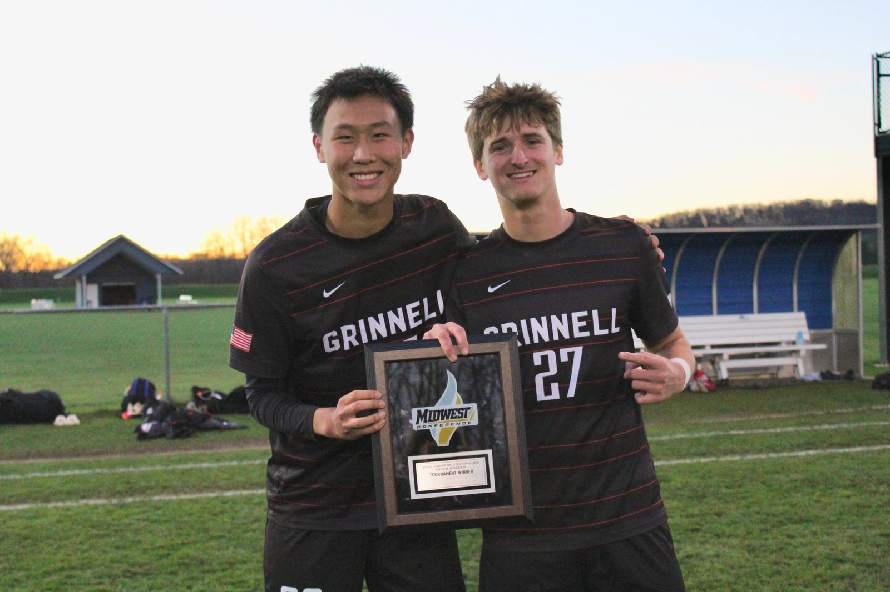

Jake Brecknock
Computer science and electrical engineering at Grinnell College. I build software that people use at work every day, and I'm currently writing a mesh VPN in Rust.
About
I'm pursuing a B.A. in Computer Science at Grinnell College and a B.S. in Electrical Engineering through the 3-2 engineering program. I also play NCAA soccer for Grinnell, receive merit aid, and co-founded the Grinnell Student Outreach Club.
Most of what I've shipped has been tools for people doing real work: a live estimating site for ACE Handyman's field manager and craftsmen, a check-in/out system for their tools and vehicles, and a site-data page for ADB engineers in St. Louis. I like problems where good software makes someone's day measurably faster.
Before Grinnell I went to Fenwick High School in Oak Park, where I was a Lawless Scholar, a National Merit semifinalist, and part of WYSE. On the math team I placed 6th in Illinois individually, and our team finished first.
I'm from Chicago and split my time between there and Melbourne. Outside of class and work I read a lot and play golf.

Skills
- C
- JavaScript
- R
- Rust
- SQL
- Python
- Java
- Circuit design
- Computer architecture
- LLM implementation
- AI frameworks
- Git
- Bash
- Excel
- Microsoft Office
- Firebase
- Project management
- Organization & time management
- Fast learner
Experience
-
–
Engineering Intern ADB Companies, Chicago IL
Software / electrical
- Went on site visits with State of Illinois licensed electrical engineers for hands-on experience at telecommunication and fiber-optic sites.
- Reviewed engineering drawings from Verizon, AT&T, and T-Mobile.
- Cleaned and organized site data on my own using Python and Excel, then built a web page that hosts that data for ADB's St. Louis team.
-
–
Residential Assistant Grinnell College
- Planned, organized, and budgeted events for a 20-person floor.
- Trained in conflict mediation, supervisor communication, emergency management, and policy enforcement.
-
–
Software Development Intern ACE Handyman Services, Chicago IL
- Built a JavaScript website that produces and stores estimates for the field manager and craftsmen. None of ACE's competitors offer live time estimates; the site is still in use and sets their estimate process apart. Built with Firebase, JavaScript, CSS, and HTML.
- Built a second site that lets workers check tools and vehicles in and out.
-
–
Robotics Assembly Team Tapster Robotics, Chicago IL
- Assembled roughly one hundred robots with a small team, relying on attention to detail, communication, and problem solving for a high-quality product and a quick turnaround.
Projects
Coursework
Course descriptions for CSC 208, 301, 324, 341 and MAT 220 are adapted from Grinnell College's academic catalog and math department pages.
Resume
Contact
- Email jakebrecknock@icloud.com
- Phone (708) 378-3477
- LinkedIn linkedin.com/in/jake-brecknock
- GitHub github.com/jakebrecknock